Tour pela interface¶
Uma janela, cinco regiões: a barra de ferramentas no topo, a árvore de arquivos à esquerda, o editor no centro, os terminais embaixo e a barra de status no rodapé. O painel da Aurora Intelligence, quando aberto, entra à direita.
{kind=link}
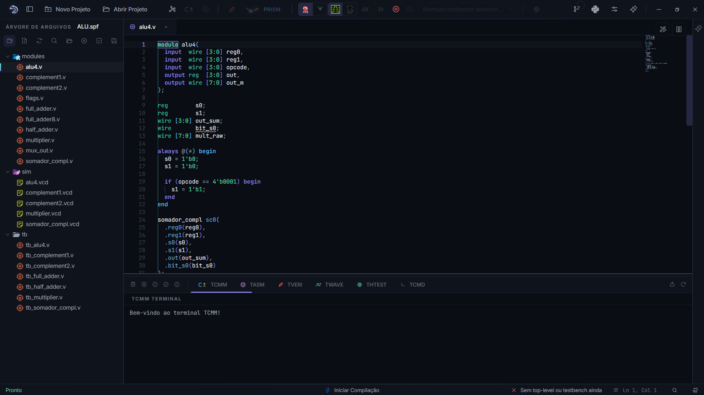
Figura 29 A janela com um projeto aberto. Esta captura serve de mapa para o restante do capítulo.¶
A barra de ferramentas¶
Os botões se agrupam por assunto, da esquerda para a direita. Um botão cinza está desabilitado porque falta um pré-requisito; o tooltip diz qual.
Projeto¶
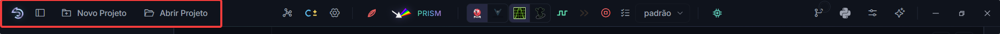
Novo Projeto cria um projeto do zero; Abrir Projeto abre um arquivo .spf existente. O primeiro ícone recolhe e restaura a árvore lateral.
Processador¶
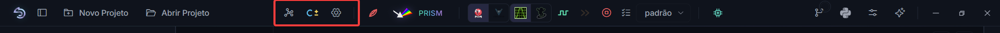
Hub de Processadores cria um processador novo. Compilar C± compila o arquivo .cmm em foco no editor; só habilita quando um .cmm está aberto e em foco. A engrenagem abre a configuração de simulação do processador ativo: frequência de clock, número de ciclos e exibição de arrays na onda.
Síntese¶
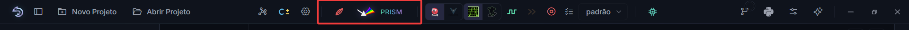
Sintetizar Verilog valida o projeto: elabora todos os fontes a partir do Top Level e gera a hierarquia de módulos. Abrir PRISM faz o mesmo e abre o diagrama do circuito. Os dois exigem um Top Level definido.
Ondas¶
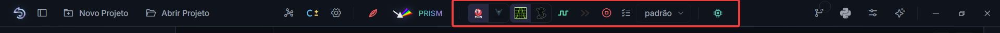
Da esquerda para a direita: as chaves de simulador (Icarus ou Verilator) e de visualizador (GTKWave ou Surfer); Analisar Verilog, que simula e abre a onda; Execução rápida, sem onda; Cancelar; a Configuração de ondas; o seletor de layout; e o Teste do processador sintetizado. As escolhas deste grupo estão explicadas em Formas de onda e Simulação do processador.
Ferramentas¶
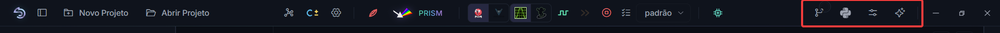
Controle de Versão abre o painel git (o badge mostra quantos arquivos mudaram); Bibliotecas Python gerencia pacotes para testbenches cocotb; Configurações abre as preferências; Assistente IA abre a Aurora Intelligence (atalho Ctrl+K).
A árvore de arquivos¶
Arquivos 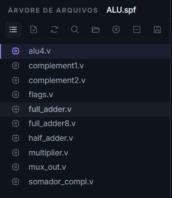 |
Pastas 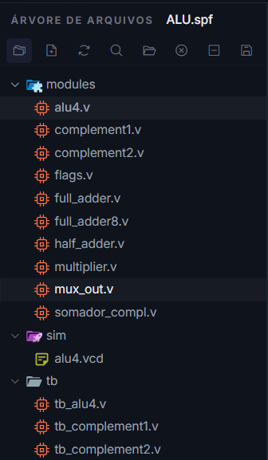 |
Hierarquia 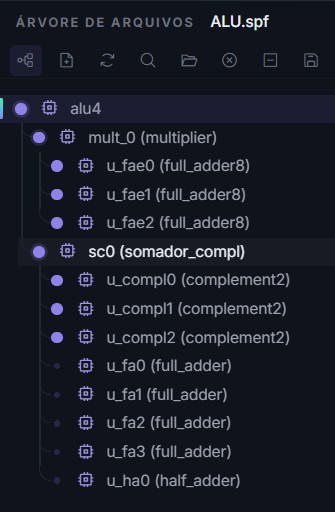 |
{kind=link}
{kind=link}
{kind=link}
A árvore tem três visões, alternadas pelo botão no seu cabeçalho:
- Arquivos
Os fontes do projeto agrupados por processador, mais os importados. É a visão de trabalho: aqui se define o Top Level e o Testbench Top pelo menu de contexto.
- Pastas
O disco como ele é, com criar, renomear, mover, copiar e excluir, arrastar e soltar, e Ctrl+Z para desfazer. A seleção é múltipla: Ctrl soma e tira, Shift pega o intervalo, Ctrl+A marca o que está visível. Renomear ou mover um arquivo referenciado pelo projeto atualiza o
.spfno mesmo gesto, e renomear um arquivo aberto devolve o cursor e a rolagem ao mesmo ponto.- Hierarquia
A árvore de instâncias do design, disponível depois de uma sintetização Verilog. Clicar em um módulo abre o fonte na linha da definição.
O cabeçalho da árvore ainda traz: novo arquivo, atualizar, busca nos arquivos (Ctrl+Shift+F), abrir a pasta no explorador, backup do projeto (gera um zip datado em Backup/) e fechar o projeto.
O editor¶
{kind=link}
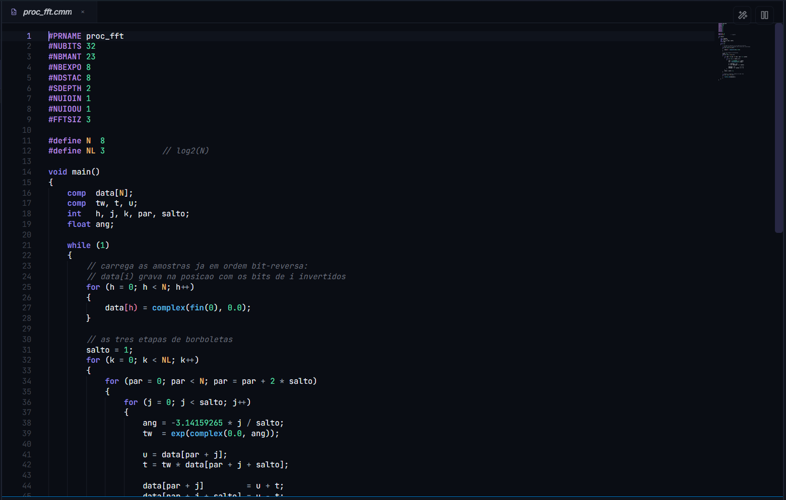
O editor é o Monaco, o mesmo do VS Code, com realce para C±, assembly SAPHO, Verilog, SystemVerilog e Python. Clique simples na árvore abre o arquivo em modo prévia (aba em itálico, substituída pela próxima prévia); duplo clique fixa a aba.
{kind=link}
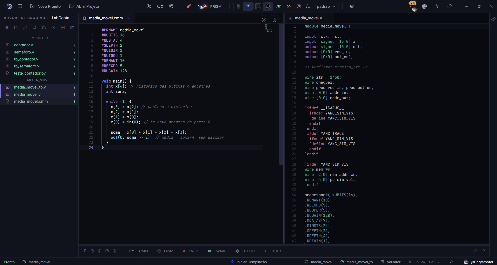
Figura 30 O uso mais proveitoso da divisão: o .cmm de um lado e o .v que o YANC gerou dele do outro, com a instância do processor e seus parâmetros à vista.¶
Três botões flutuam no painel em foco: dividir o editor (até três painéis), pré-visualizar Markdown e HTML, e formatar o arquivo (Shift+Alt+F). Para Verilog, dois analisadores trabalham enquanto você digita: um sintático, que também formata, e um semântico, que elabora o projeto inteiro e aponta sinais não declarados e incompatibilidades de porta.
Selecionar um trecho de código faz aparecer uma estrela: é o acesso rápido à Aurora Intelligence sobre aquela seleção (explicar, corrigir, melhorar, comentar).
Os terminais¶
{kind=link}
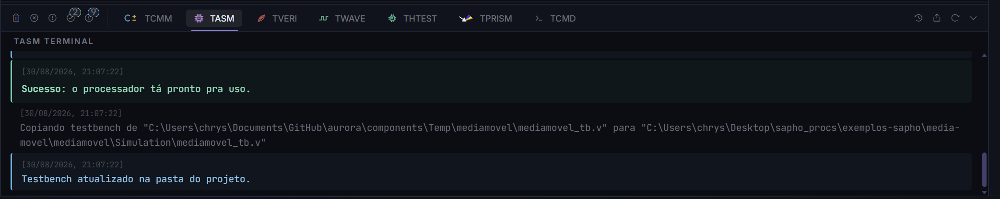
Sete abas, uma por etapa: TCMM (compilação C±), TASM (montagem e geração do Verilog), TVERI (validação Verilog e hierarquia), TWAVE (simulação e ondas), THTEST (teste do processador sintetizado), TPRISM (a síntese do esquemático do PRISM) e TCMD, que é um PowerShell de verdade dentro da AURORA.
As mensagens chegam classificadas (erro, aviso, sucesso, dica) e podem ser filtradas pelos botões com contadores. Toda referência de linha que uma ferramenta imprime vira link, no formato de cada uma: o caminho com linha do Icarus, o caminho com linha e coluna do Verilator, o Erro na linha N do compilador C± e o traceback do cocotb; o clique abre o arquivo naquele ponto. O botão de limpar vale para o terminal aberto ou, no modo todos, para todos de uma vez; o de exportar salva o conteúdo de todos os terminais em um .txt; e o do relógio abre o Histórico de compilações, descrito em Compilação e artefatos.
Três gentilezas evitam a rolagem infinita: qualquer contador que sobe — do simulador, do cocotb ou de um $display seu no testbench — vira uma barra de progresso em vez de uma linha por atualização; uma linha repetida em sequência vira um contador xN na própria linha; e, durante uma simulação, um marcador no TWAVE mostra o arquivo de onda crescendo ao vivo e congela no tamanho final quando ela termina (o mouse em cima revela o caminho do arquivo). Quando uma mensagem cita um componente que ainda não foi baixado, a linha ganha o botão Abrir Componentes.
O TCMD não é um console de mentira nem um espelho de saída: é o seu próprio shell, um PowerShell de verdade rodando na máquina, com as suas variáveis de ambiente, o seu histórico e as suas permissões. Vale ali tudo o que valeria na janela do sistema: git, pip, um script seu, navegar até outra pasta. A AURORA só acrescenta o contexto do projeto ao prompt (processador ativo, diretório, branch) e alguns comandos próprios.
Por ora, dois deles: apython chama o Python embarcado da AURORA, e Use-Python aurora faz python significar o embarcado naquela sessão. O TCMD merece um capítulo próprio de dicas em Controle de versão, Python, componentes e configurações.
{kind=link}
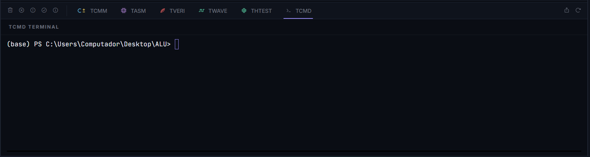
A barra de status¶
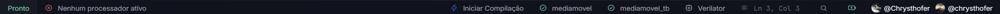
Da esquerda para a direita: Pronto ou Não Pronto (clicável quando não há projeto: abre o diálogo de abrir); o processador ativo; o andamento da compilação; o Top Level; o Testbench Top; o motor de simulação escolhido; a posição do cursor com o controle de zoom; e as fichas das contas GitHub e GitLab, apagadas quando desconectadas, que abrem o painel de controle de versão. Num laptop entra ainda um indicador de energia: verde na tomada, vermelho na bateria — na bateria o Windows reduz o clock da CPU e a simulação demora mais, e o clique no indicador explica e leva às configurações de energia do Windows.
Paleta de comandos e busca¶
Um detalhe que economiza tempo: quase todo modal traz um ponto de interrogação ao lado do X, que abre o capítulo deste manual sobre aquela tela, sem sair da AURORA (Controle de versão, Python, componentes e configurações).
Ctrl+Shift+K (ou Ctrl+Shift+P) abre a paleta de comandos, com tudo o que os botões fazem, pesquisável pelo nome. Ctrl+Shift+F abre a busca em todos os arquivos do projeto, com opções de maiúsculas, palavra inteira e expressão regular.
{kind=link}
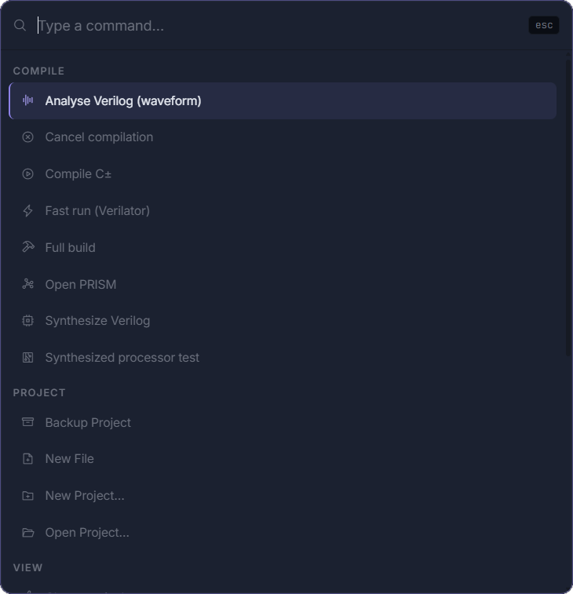
{kind=link}
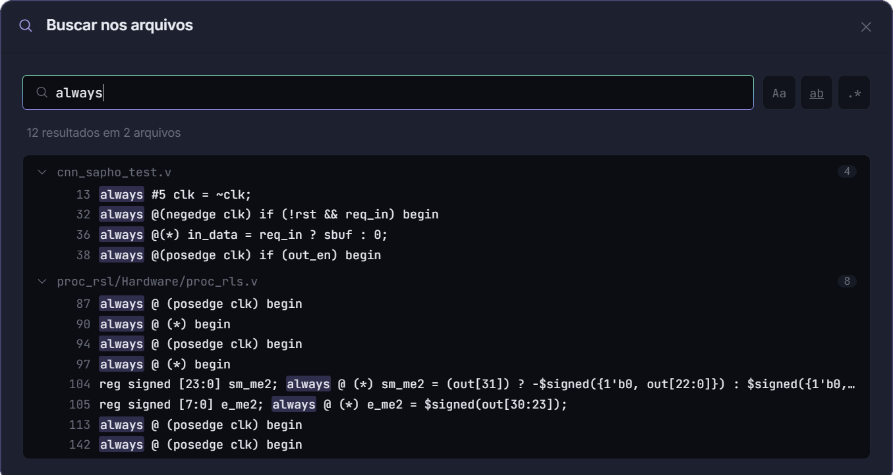
Figura 31 A busca varre o projeto inteiro e agrupa por arquivo, com a contagem de ocorrências de cada um. O clique numa linha abre o arquivo naquele ponto.¶
Com o mapa em mãos, o próximo capítulo explica como um projeto se organiza no disco: Organização de um projeto.